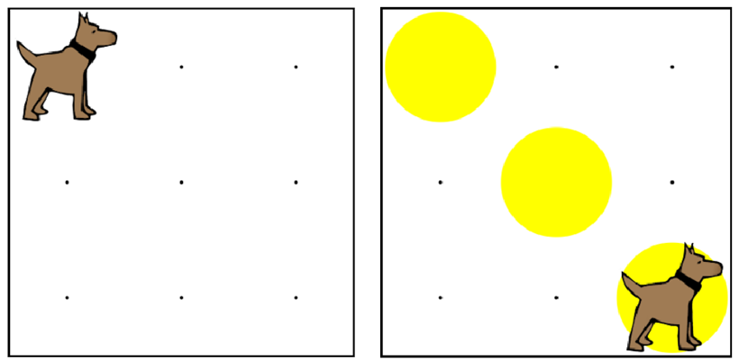

Write a program to have karel build a slide, and then
end up on the bottom right corner of the world. Make sure
to define and use the turnRight() function.
編寫一個程序，有卡雷爾建立一個滑梯，然後最終在世界的右下角。確保定義和使用的右轉（）函數。

move(); 移動();
turnLeft(); 左轉();
putBall(); 放球();
takeBall(); 拿球();
// "Defining the function" 定義函數
function turnRight() { 功能右轉（）{
turnLeft(); 左轉();
turnLeft(); 左轉();
turnLeft(); 左轉();
}
// "Calling a function" 調用一個函數
turnRight(); 右轉（）